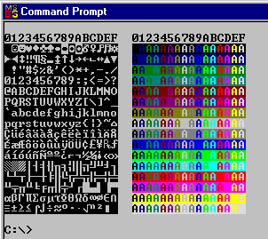

Runtime Library
Reference
· Constants
· Data types
Standard C
· assert.h
· complex.h
· ctype.h
· fenv.h
· float.h
· locale.h
· math.h
· setjmp.h
· signal.h
· stdarg.h
· stddef.h
· stdio.h
· stdlib.h
· string.h
· time.h
Standard C++
· IOstream
· new
Win32
· gc.h
DOS, DOS32, Win16
· bios.h
· cerror.h
· disp.h
· dos.h
· dos.h part 2
· emm.h
· handle.h
· int.h
· msmouse.h
· sound.h
· swap.h
· tsr.h
· winio.h
Other C
· bitops.h
· conio.h
· controlc.h
· direct.h
· fltpnt.h
· io.h
· page.h
· process.h
· search.h
· sys\stat.h
· tabsize.h
· trace.h
· utime.h
· unmangle.h
· util.h
Other C++
· regexp.h
· class complex
|
disp.h
These functions write directly into screen memory.
They are suitable for use on IBM compatible displays (or BIOS) in text mode.
The disp functions are an easy way to do direct screen I/O
and have portable source code to DOS16, DesqView, DOSX, and Win32
text consoles.
Overview
The disp functions are meant to provide high speed access
to the text mode video buffer in a way that provides great
control while being portable from DOS16 to DOSX and even
to Win32 console programs.
The idea is to use disp_open() to open the display, perform
the I/O to the display, and then disp_close() it. All
writes to the display are done with disp functions, not functions
that write to stdout.
The screen cells are addressed by row and column. (0,0) addresses the
upper left cell, and (disp_numrows - 1, disp_numcols - 1) addresses
the lower right cell.
A simple hello world program would be:
#include <disp.h>
int main()
{
disp_open();
disp_printf("hello world!\r\n");
disp_close();
return 0;
}
- Prototype
- void disp_close();
- Description
- Flushes output and closes the disp package opened
with disp_open().
- Prototype
-
void disp_box(int type, int attr, unsigned row, unsigned col, unsigned brow, unsigned bcol);
- Description
-
Draws a box of border type with attribute attr starting at
top left (row,col) and finishing at bottom right (brow,bcol).
Values for type are:
| Value
| Description
|
| 0
| double line border
|
| 1
| single line border
|
| 2
| solid line border
|
| 3
| double horizontal, single vertical
|
| 4
| single horizontal, double vertical
|
- Prototype
-
void disp_eeol();
- Description
- Erase from current cursor position to end of the line.
- Prototype
-
void disp_eeop();
- Description
- Erase from current cursor position to end of the screen.
- Example
-
To clear the screen:
#include <disp.h>
int main()
{
disp_open();
disp_move(0,0);
disp_eeop();
disp_close();
return 0;
}
- Prototype
-
void disp_endstand();
- Description
-
Reverts to normal after disp_startstand() set
the attribute to reverse video mode.
- Prototype
-
void disp_fillbox(unsigned attchar,
unsigned trow, unsigned lcol,
unsigned brow, unsigned rcol);
- Description
-
Fills box with attchar. Useful for clearing
rectangular areas of the screen.
- Prototype
-
void disp_flush();
- Description
-
Flushes all output and brings the screen up to date.
Call this before, for example, requesting input from the user
to be sure the screen is updated. This allows implementations
of disp to use buffering for speed.
- Prototype
-
int disp_getmode();
- Description
-
Gets the current video mode.
- Return Value
-
Returns the current video mode.
- Prototype
-
void disp_hidecursor();
- Description
-
Hides the cursor. These calls can be nested, and only when
an equal number of disp_showcursor()'s have been called
is the cursor shown again.
- Prototype
-
int disp_getattr();
void disp_setattr(int attr);
- Description
-
Gets and sets the character attribute used for subsequent
character writes to the display.
The attributes can be a hex value, or one of the predefined values:
| Name
| Description
|
| DISP_REVERSEVIDEO
| reverse video text
|
| DISP_NORMAL
| normal text
|
| DISP_UNDERLINE
| underlined text (mono only)
|
| DISP_NONDISPLAY
| black on black text
|
The following bits can be OR'd in:
| Name
| Description
|
| DISP_INTENSITY
| bold face
|
| DISP_BLINK
| blinking text (mono only)
|
- Return Value
-
disp_getattr() returns the current attribute.
- Example
-
This example prints "hello world!" in red.
#include <disp.h>
int main()
{
int attr;
disp_open();
attr = disp_getattr(); // save original attribute
disp_setattr(0x7C); // set to red on grey
disp_printf("hello world!");
disp_setattr(attr); // restore original attribute
disp_printf("\r\n");
disp_close();
return 0;
}
- Prototype
-
void disp_move(int row, int col);
- Description
-
Sets the cursor position to (row,col).
The hardware cursor may not get updated until after
disp_flush() is called.
- Prototype
-
void disp_open();
- Description
-
Opens the disp package, initializes global state variables.
Close the disp package with disp_close().
The globals are read-only, and are:
| Name
| Description
|
| disp_mono
| 0 if color and 1 if monochrome
|
| disp_snowycga
| !=0 if original IBM CGA
|
| disp_mode
| Current display mode. See disp_setmode().
|
| disp_inited
| !=0 if disp package is open.
|
| disp_ega
| !=0 if IBM EGA or VGA compatible display.
|
| disp_base
| Segment of video display RAM (MDA=0xB000, CGA = 0xB800).
|
| disp_numrows
| Number of rows in the display.
|
| disp_numcols
| Number of columns in the display.
|
| disp_cursorrow
| Row of cursor position.
|
| disp_cursorcol
| Column of cursor position.
|
- Prototype
-
void disp_peekbox(unsigned short *save, unsigned row, unsigned col, unsigned brow, unsigned bcol);
- Description
-
Writes a block of characters to *save from the
screen area described by (row,col) and (brow,bcol).
Useful for rapidly transferring prebuilt screen images to
the actual screen.
- Prototype
-
unsigned short disp_peekw(int row, int col);
- Description
-
Reads screen at (row,col).
- Return Value
-
Returns attribute/character at screen location (row,col).
- Prototype
-
void disp_pokebox(unsigned short *save, unsigned row, unsigned col, unsigned brow, unsigned bcol);
- Description
-
Writes a block of characters pointed to by save to the
screen area described by (row,col) and (brow,bcol).
- Prototype
-
void disp_pokew(int row, int col, unsigned short attchar);
- Description
-
Writes attchar into the screen at position (row,col).
attchar is the attribute combined with the character to write,
where attribute forms the upper byte and the character forms the lower
byte.
- Example
-
This example clears the screen, and then displays all
256 characters and all 256 attributes.
#include <stdio.h>
#include <disp.h>
int main()
{ int attchar,segment,i,row,col;
disp_open();
disp_move(0,0); // move cursor to upper left corner
disp_eeop(); // clear screen
disp_printf("\r\n0123456789ABCDEF 0123456789ABCDEF\n");
i = 0;
for (row = 0; row < 16; row++)
{ for (col = 0; col < 16; col++)
{
attchar = 0x0700 + i;
disp_pokew(row + 2, col, attchar);
attchar = 0x0041 + i * 256;
disp_pokew(row + 2, col + 18, attchar);
i++;
}
}
for (i = 0; i < 16; i++)
disp_printf("\n");
disp_close();
return 0;
}
The output is:

- Prototype
-
int disp_printf(char *format, ...);
- Description
-
Works just like printf(), except that characters are output
via disp_putc() rather than to stdout.
The characters are written to the current cursor position,
and the current cursor position is updated.
Note that both a \n and a \r are needed to advance to the
beginning of the next line, not just a \n.
- Return Value
-
Returns the number of characters written.
- Example
-
This example prints "hello world!"
#include <disp.h>
int main()
{
disp_open();
disp_printf("hello world!\r\n");
disp_close();
return 0;
}
- Prototype
-
int disp_putc(int c);
- Description
-
Writes the current character to the display using
the current attribute.
The following special characters are recognized:
| Character
| Action
|
| 0x07
| rings bell
|
| 0x08
| backspace
|
| 0x09
| advance to next tab stop (8 column tabs)
|
| 0x0A
| linefeed, advance to next line. Scroll if at bottom.
|
| 0x0B
| vertical tab, same as linefeed.
|
| 0x0C
| form feed, same as linefeed.
|
| 0x0D
| carriage return
|
| 0x7F
| del; ignored
|
If the cursor reaches the right edge of the display, if
disp_nowrap is 0, it just stays there. If it is 1, the
cursor is advanced to the beginning of the next line.
- Return Value
-
Returns c if successful, EOF on error.
- Prototype
-
void disp_puts(const char *string);
- Description
-
Writes all the characters in string to the screen
using disp_putc().
- Prototype
-
void disp_reset43();
- Description
-
Resets the display mode set by disp_set43() back
to 80 by 25 mode.
Do not use in between disp_open() and disp_close().
- Prototype
-
void disp_scroll(int lines, unsigned ulrow, unsigned ulcol, unsigned lrrow, unsigned lrcol, unsigned attr);
- Description
-
Scrolls the screen up.
| Parameter
| Description
|
| lines
| number of lines to scroll; negative means scroll down
|
| ulrow
| upper left row of area to scroll
|
| ulcol
| upper left column of area to scroll
|
| lrrow
| lower right row of area to scroll
|
| lrcol
| lower right column of area to scroll
|
| attr
| video attribute to use on uncovered areas
|
- Prototype
-
void disp_set43();
- Description
-
Sets display mode to 80 by 43 EGA text mode. Should not
be used while disp package is open. Must have an EGA or
VGA for this to work. The actual resulting number of lines
is written into disp_numrows and may not be 43.
- Prototype
-
void disp_setcursortype(int type);
- Description
-
Sets the cursor starting and ending line.
type is defined as (startline*256+endline).
The DOS default cursor types are:
| Mode
| Start
| End
| type
|
| monochrome
| 11
| 12
| ((11*256)+12)
|
| color
| 6
| 7
| ((6*256)+7)
|
Or, the following predefined cursor types can be used:
| Name
| Description
|
| DISP_CURSORBLOCK
| block cursor
|
| DISP_CURSORHALF
| half height cursor
|
| DISP_CURSORUL
| underline cursor
|
- Prototype
-
void disp_setmode(unsigned char mode);
- Description
-
Sets the BIOS video mode to mode. Use before
calling disp_open().
Common video modes are:
| Mode
| Size
| Display Card
|
| 0
| 40 x 25 B/W text
| CGA/EGA
|
| 1
| 40 x 25 color text
| CGA/EGA
|
| 2
| 80 x 25 B/W text
| CGA/EGA
|
| 3
| 80 x 25 color text
| CGA/EGA
|
| 4
| 320 x 200 color graphics
| CGA/EGA
|
| 5
| 320 x 200 B/W graphics
| CGA/EGA
|
| 6
| 640 x 200 color graphics
| CGA/EGA
|
| 7
| 80 x 25 B/W text
| MDA / EGA with mono display
|
| 0xD
| 320 x 200 16 color
| EGA
|
| 0xE
| 640 x 200 16 color
| EGA
|
| 0xF
| 640 x 350 4 color
| EGA with mono display
|
| 0x10
| 640 x 350 16 color
| EGA
|
- Prototype
-
void disp_showcursor();
- Description
-
Shows cursor again after it was hidden with disp_hidecursor().
- Prototype
-
void disp_startstand();
- Description
-
Sets the attribute for subseqent writes to the screen
to be reverse video. The effect is set back to normal with
disp_endstand().
- Prototype
-
void disp_usebios();
- Description
-
Sets up the disp functions to write chars to the screen
using the BIOS rather than writing directly to the video ram.
Doing so increases portability but reduces speed.
Call after disp_open().
|
 Home
| Search
| CTG
| RTL
| IDDE
| STL
| C/C++ Compiler
| D
Home
| Search
| CTG
| RTL
| IDDE
| STL
| C/C++ Compiler
| D